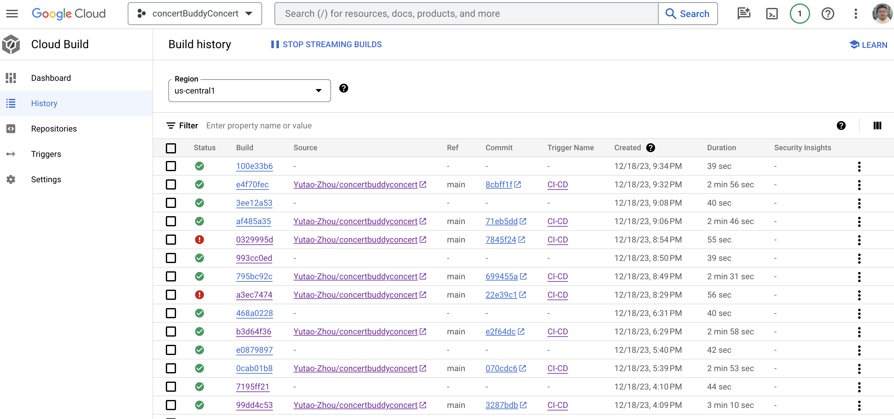
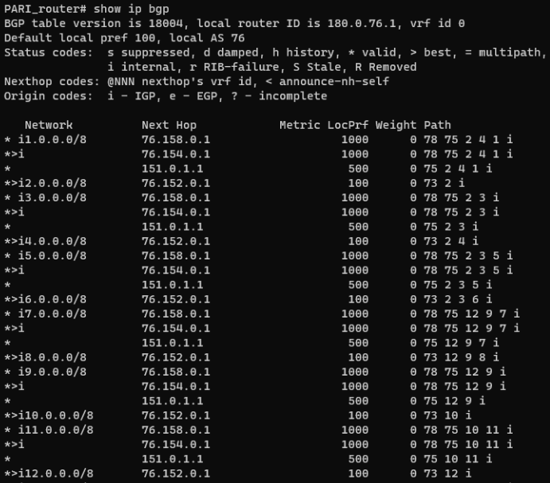

Yutao Zhou
Software Development Engineer II at Amazon
M.S. at Columbia University
B.S. at University of California, Santa Barbara
Download ResumeSKILLS & PACKAGES
- Python
- Java
- JavaScript
- HTML
- CSS
- C
- Spring Boot
- React.js
- Django
- Flask
- FastAPI
- REST APIs
- RESTful Web Services
- MySQL
- PostgreSQL
- NoSQL
- AWS
- Microservices
- Kubernetes
- Docker
- unittest
- pytest
- jtest
- Unit test
- Integration test
- Design review
- Code review
- Version Set
- Pipeline
- Software development management system
- Threading
- asyncio
- Shell script
- Git
- MongoDB
- Neo4j
- TypeScript
- XML
- Solidity
- Spark/hadoop
- Socket Programming
- Full-Stack Development
- Google Cloud Platform (GCP)
- Apache Airflow
- GraphQL
- D3.js
- TensorFlow
- Database
- Computer Network
- Operating System
- Cloud Computing
- Deep Learning
- Reinforcement Learning
- Big Data Analysis
- Stream Data Processing
- Blockchain
- MATLAB
- LaTeX
- Autodesk CAD
- EasyEDA
ABOUT ME
Hi, I'm Yutao Zhou, a Software Development Engineer II at Amazon Web Services (AWS), based in Silicon Valley. I help build and scale the networking workflow platform that powers AWS infrastructure and AI systems worldwide. I'm passionate about designing reliable, high-performance distributed systems and solving complex problems with clarity and impact. I believe great engineering comes from curiosity, persistence, and empathy - both in code and in teamwork.
WORK EXPERIENCE
Amazon Web Services
SDE II - Santa Clara, CA
- Working on a team that changes how Amazon scales up and tears down its data center networks. We help NDEs automate as much of their process as possible, enabling Amazon data center capacity (not only AWS) to be elastic.
Amazon Web Services
SDE - Santa Clara, CA
- Working on a team that changes how Amazon scales up and tears down its data center networks. We help NDEs automate as much of their process as possible, enabling Amazon data center capacity (not only AWS) to be elastic.
Amazon Web Services
SDE Intern - Santa Clara, CA
- Created a smart reboot and host monitoring system that checks the status of our devices globally and reboots eligible devices with adjustable speeds and settings. Redundant checks on host health (e.g., BMC, VPC status, etc.) and location health are performed to ensure reboots never impact services, and the system is deployed to 10K+ production devices.
- Improved device health and reduced DevOps labor requirements. All hosts were patched or updated every 14 days.
- Completed the project entirely independently, covering the full software development lifecycle from design review, implementation, unit testing, integration testing, code review, and monitoring pipeline setup to production deployment.
- Wrote unit tests using the pytest and unittest frameworks for Python packages. Wrote unit tests using jtest for Java packages. Achieved total unit test coverage of more than 85% for my code across more than five different packages written in Python or Java.
- Found bugs from other teams and coordinated with their SDEs to fix them. Also fulfilled requests from other teams for shared packages.
Deepchem Co., Ltd.
Python Intern - Beijing, China
- Designed and built a calculation task distribution system that distributed jobs from a distribution server to different calculation servers (group project, four people total, including one manager).
- Communicated and collaborated with the front-end team and other coworkers to create a web-based platform. Represented the team in communication with management. Finished building it in one month.
- Checked job status on the platform and handled manual stops from users with GET requests. Handled exceptional cases (e.g., the distribution server going offline). Stress-tested all four calculation servers.
- Checked front-end job status and submitted calculation logs to the distribution server in real time with GET and POST. Zipped required calculation results and uploaded files to the distribution server with POST (up to 10 jobs in production).
- Increased overall calculation efficiency by 50% - 200% (by keeping calculation servers busy during non-business hours).
- Created algorithms to find missing datasets in a database from ID-query CSV files, perform data filtering and alignment, and extract 3D Cartesian coordinates and SMILES using the Pybel (OpenBabel) Python package.
- Constructed and maintained an SQL database. Extracted data from XYZ and CSV files, converted SMILES, and inserted the results into the SQL database (including duplicate checks) (individual project).
- Developed an algorithm to audit two-way connections between a PC and lab equipment automatically with sockets (individual project completed in one day).
Beijing MeiQuan Science and Technology Development Co., Ltd.
Part-time Software Engineer and Administrative Assistant - Remote, USA / Beijing, China
- Visualized customer lists on an interactive map. Click here to see the map. Used the Google Maps API for geocoding and saved results to JSON to reduce API quota usage.
- Read the products' CAD structural drawings and specifications, made optimization suggestions, participated in new product development, and introduced product features to potential clients.
- Produced promotional materials remotely, such as the company's and products' brochures, using PowerPoint and LaTeX.
- Discuss project alternatives with the customer including but not limited to problem-solving.
- Hands-on experience with product production and shipping.
Research Institute of Nanjing Runnan Medical Electronics Co., Ltd.
Part-time Assistant - Remote, USA
- Collected clinical data in Python and drew signal waveforms, such as electrocardiograms (ECG), electromechanical film ballistocardiograms (BCG), LC BCG, etc.
- Identified signal peaks through local maximization, calculated peak distances, and plotted them to extract the beat-by-beat cardiac cycle of ECG signals.
- Performed extraction of the beat-by-beat cardiac cycle of BCG signals with or without a synchronous ECG signal reference.
UCSB Physics Circus
Core member - UCSB, Santa Barbara, CA
- Delivered intriguing physics lectures to local elementary schools via Zoom.
- Co-designed the Balloon Thermal Experiment and created the featured homepage on Home Experiments Website: https://circus.physics.ucsb.edu/home-experiments/
- Got featured several times in The Current, UCSB's official magazine.
UCSB College of Letters and Science
Academic Peer Advisor - UCSB, Santa Barbara, CA
- Advised peer students on educational plans and provided suggestions on course selection.
- Managed Qless (a virtual walk-in platform), handled progress checks and petitions, explained paperwork processes and college policies, and addressed student concerns, especially during the pandemic.
- Managed academic appointments, provided detailed academic plans and progress checks, and explained potential academic actions and consequences.
Citibank
YTP Participant - Beijing, China
- Introduced financial products to new customers and received an award for best customer service.
- Listened to morning reports, learned a great deal of financial knowledge, and gave a presentation about the group project.
EDUCATION
Columbia University: Fu Foundation School of Engineering and Applied Science
New York, NY: Sep 2022 - Dec 2023Master of Science in Electrical Engineering
- Overall GPA: 3.8/4.0
University of California - Santa Barbara: College of Letters and Science
Santa Barbara, CA: Sep 2018 - Dec 2021Bachelor of Science in Physics
- Overall GPA: 3.7/4.0
- Awards: Dean's Honor (L&S) in Winter 2021
PERSONAL PROJECTS

JavaScript & React web application series
Independent Projects
- Link to the GitHub repository for all of the code: Click Here.
- A fancy Weather App that can change units by clicking on the temperature. The background also changes with the weather and includes user-location and search functions. Built with pure JavaScript, CSS, and HTML. Link to the web application: Weather App.
- This is a Todo App that stores a to-do list in local storage. It includes detailed animations and interactions. Built with pure JavaScript, CSS, and HTML. Link to the web application: Todo App.
- This is an online calculator built with React. Link to the web application: Calculator App.
- This is a countdown app built with pure JavaScript, CSS, and HTML. Link to the web application: Count Down App.

NLP Model's Comparison in Key Phrase Extraction Web Application
Collaborative Project
- Highlights the outputs of different supervised, unsupervised, and BERT-unsupervised ML models for key-phrase extraction in the business domain. Includes adjustable settings with customized natural language input. Total runtime is generally under 1 second.

Used Car Data Visualization Web Application
Independent Projects
- Link to GitHub repository for all of the code:Click Here.
- Built with Streamlit, handling large datasets (365K data points) with Dask, Pandas, and NumPy for data filtering and cached data.
- Visualized data with scatter plots on a heat map (with more than 100 selectable base maps), pie charts, and scatter plots with trend lines using packages such as Plotly, Leafmap, and Pydeck.
- Added a VIN lookup function using GET requests to the NHTSA (National Highway Traffic Safety Administration) API.
- Designed AI key-phrase extraction from listing descriptions with spaCy and visualization with a word cloud based on VIN query results (VIN query, key-phrase generation, and word-cloud generation usually take about 2 seconds and should take less than 5 seconds).
- Implemented geocoding and data filtering based on user-input distance from the query location using a geocoder in GeoPy (the entire query typically takes less than 0.5 seconds and should take less than 3 seconds depending on settings).
- Added a login page with cookies. Hosted the web application on a personal server with domain redirection (stopped hosting because of budget constraints).
- Tested the Google Maps API with `requests` for geocoding, but abandoned it due to cost ($5 per 1,000 queries).
- Deployed the website to Google Cloud Platform with Docker and YAML files, but abandoned it due to the daily outgoing internet traffic limit for App Engine on the free account.
ACADEMIC PROJECTS

Concert Buddy
Course Project: COMS 6156 Cloud Computing
- Implemented a microservice architecture in which each microservice is a REST API that supports CRUD.
- Utilized Spring Boot in Java to develop the Concert Microservice deployed on Google App Engine, integrating PostgreSQL hosted on GCP Cloud SQL.
- Integrated TicketMaster API within the Concert Microservice to synchronize and manage concert information.
- Implemented Continuous Integration/Continuous Deployment (CI/CD) using GCP Cloud Build, automating build and deployment processes triggered by new commits to the repository.
- Configured AWS API Gateway and aggregator to route requests across distinct microservices.
- Employed AWS S3 and CloudFront for Content Delivery Network (CDN), ensuring low-latency delivery of front-end UI websites.
- Implemented Single Sign-On (SSO) functionality with Google accounts to enhance the user experience.
- Built a user microservice using Spring Boot, deployed it on EC2 using Docker, and utilized PostgreSQL hosted on AWS RDS.
- Built a finder microservice with Spring Boot, deployed it on EC2, and employed DynamoDB for data storage.
- Link to GitHub repository for all of the code: Click Here.
- Click Here to see a demo of the project on YouTube.

NYC Subway Traffic Analysis
Course Project: ELEN 6889 Large Scale Stream Data Analysis
- Full-stack RESTful web application that displays the entries and exits of each subway station on an interactive map.
- Wrote frontend JavaScript that lets users choose a time with a slider. Corresponding data is visualized on the map, and a ranking of the top 10 stations by throughput at the selected time is displayed on the side.
- All data presented in the interactive map are fetched in real time from the backend REST API written with Python Flask.
- The data was collected from the MTA website in batches and preprocessed with Spark.
- Link to GitHub repository for all of the code: Click Here.
- Click Here to see a demo of the project on YouTube.

MBTI Personality Analysis and Prediction
Collaborative Course Project: EECS 6893 Big Data Analysis
- Link to GitHub repository for all of the code: Click Here.
- Created a web application that uses users' tweets to predict their personalities.
- Trained a machine learning model using the MBTI personality dataset.
- We used Flask as the backend and HTML/CSS as the frontend. When a user enters a username, we fetch the user's tweets using the Twitter API (Tweepy), process the fetched data, use the pre-trained model to make predictions, and present the corresponding results to the user.
- For details, please check out my final report here.
- Click Here to view our final presentation on YouTube.

Adaptive Bitrate Video Streaming
Individual Course Project: CSEE 4119 Computer Network
- The goal of this project is to enable all users to play video smoothly under changing internet throughput.
- Created a proxy that listens (as a server) to customer requests (users in a browser), continuously calculates customer throughput, and requests video chunks with a suitable bitrate (as a client) from the video server.
- Used a TCP welcome socket, connection sockets, and threading to handle multiple users streaming at the same time.
- Note: The course policy does not allow open-sourcing my code, but I do have all of the code in a private GitHub repository.
- Click Here to see a demo of my proxy on YouTube.

My Own Internet
Individual Course Project: CSEE 4119 Computer Network
- Configured OSPF and iBGP to connect 8 routers and 6 hosts in my autonomous system.
- Configured eBGP to perform different routing policies for inter-AS connections with my provider, customer, and peers. For example, achieved no-valley routing and preferred-customer routing (preference order: customer, peer, provider). Performed inbound traffic engineering to prefer traffic from one link of a provider (with multiple links) and to guide traffic to prefer one provider over others.
- Successfully fetched data across our Internet topology (with working policies) formed with my classmates.
- Note: The course policy does not allow open source for my code.

Swin Transformer Paper Reimplementation
Individual Course Project: ECBM 4040 Deep Learning and Neural Network
- Replicated the entire Swin Transformer architecture.
- Tested my model on CIFAR-100 and achieved an accuracy of 46.7% (I only had access to very limited computational resources, so I could only train on a much smaller dataset than the original paper).
- For details, please check out my final report here.
- Note: The course policy does not allow open-sourcing my code, but I do have all of the code in a private GitHub repository.

GraphQL API for OpenSea Smart Contract
Course Project: ELEN 6883 Blockchain Technology
- Wrote a Subgraph (a GraphQL API) that enables users to interact with the OpenSea smart contract without needing to understand the technical details under the hood.
- Users could query information, listings, transfers, and bids for NFTs on the OpenSea smart contract using GraphQL query syntax.
Introduction to Scientific Computing Laboratories
PHYS 129L Course Projects
- Used Python for string processing, error handling, inheritance, and deriving the Julian Day based on the input.
- Calculated the complex plane, drew a fractal image, and plotted a 3D image of a rotatable Airy disk.
- Practiced the Discrete Fourier Transform, Fourier analysis algorithms, and drawing methods.
- Practiced Gaussian approximations, integration algorithms, and Monte Carlo simulation.
Auroral Morphology Classification Based on Unsupervised Clustering
Advisor: Prof. Ziming Zou (National Space Science Center, CAS)
- Familiarized myself with the principles of unsupervised clustering algorithms and the process details of the KNN and K-means algorithms.
- Learned how to call underlying algorithms in the scikit-learn machine learning library.
- Consulted literature on morphological categories of aurora observation images in all-sky imaging and collected data sources of aurora images.
- Programmed an unsupervised morphological clustering pipeline for aurora images.
Get in Touch
- Email: yutaozhoucolumbia@gmail.com
- Tel: +1 805-637-1617
- School Email: yz4359@columbia.edu
- Tel: +86 13520759678
- Address: 3131 Homestead Rd, Santa Clara, CA 95051